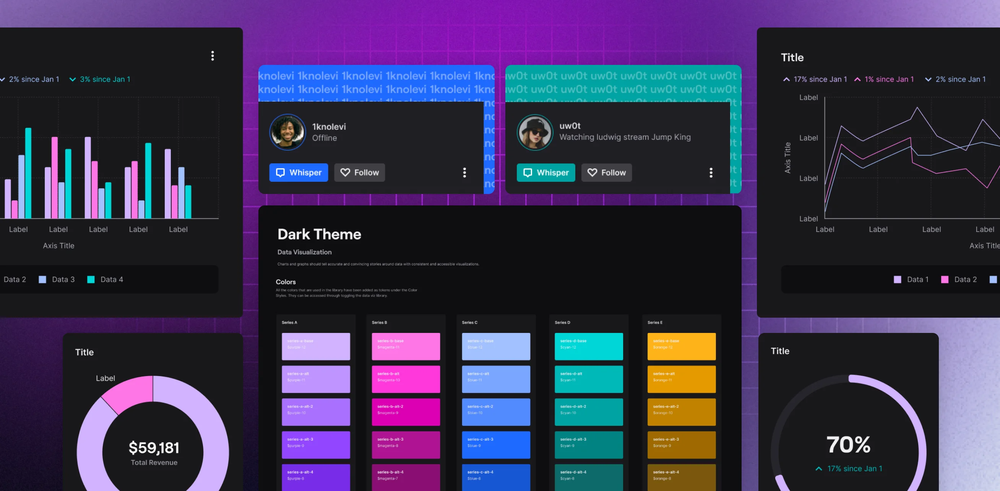

2021
Twitch
Reimagining Friends
Friends is a part of Twitch that gets a fair amount of traffic, but hasn’t changed since it was first designed. During the company-wide rebrand in 2019, Friends was unfortunately a space that wasn’t updated to match the look and feel of the new design language. I redesigned the Friends feature, prototyped the new design, and worked with engineers on code reviews and pull requests to make the design work go live.
Creating a Data Viz Library
As part of Core UI, the design system powering Twitch, the goal was to provide UI libraries that improve efficiency and platform-wide consistency. While common web and mobile components were standardized, data visualization lacked clear patterns and consistency. This project involved building a Data Viz Library from scratch, defining chart guidelines, usage principles, and a UI kit for designers to use confidently and consistently.
